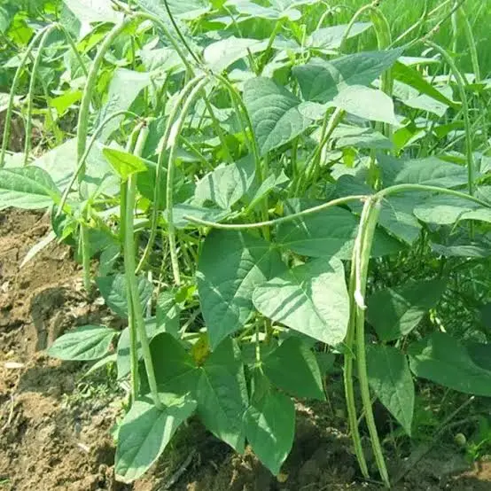
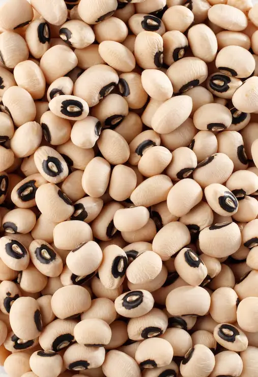
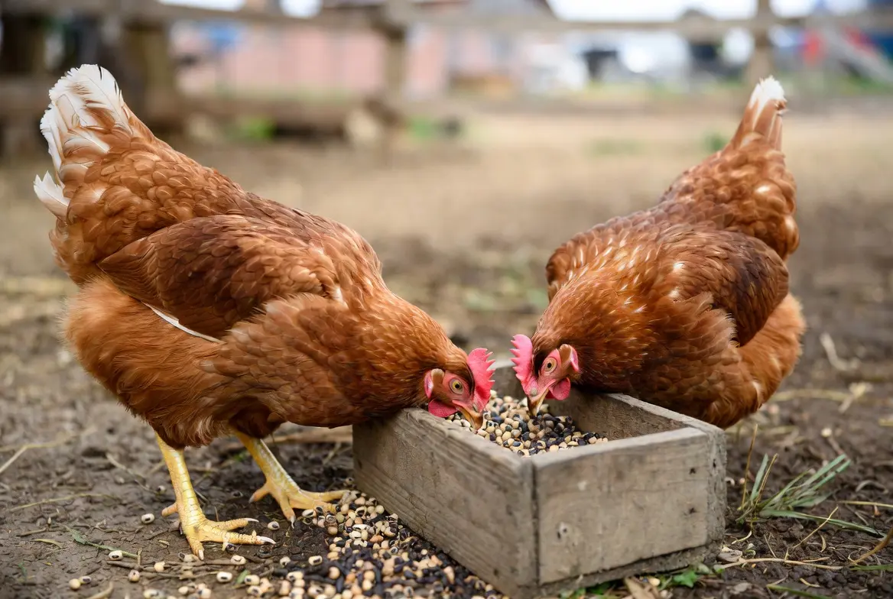

🫘 Can Chickens Eat Cowpeas? Growing Cowpeas for Chickens
Yes, chickens can eat properly prepared cowpeas as a supplemental food. Cowpeas are a heat-tolerant legume that can provide seeds, leaves, and forage opportunities while adding variety and protein to a backyard chicken feed plan. This guide covers choosing varieties, planting, harvesting, processing, storage, and safe feeding practices.
🫘 Can Chickens Eat Cowpeas?
Yes. Chickens can eat properly prepared cowpeas as a supplemental food. Tender leaves, immature pods, fresh peas, and thoroughly cooked mature beans may all be offered in moderation alongside a complete poultry ration.
Raw mature cowpea seeds are not the preferred form for meaningful feeding because they contain antinutritional compounds that can reduce protein digestion and nutrient use. For backyard flocks, plain thoroughly cooked cowpeas are generally the most practical way to use mature dry beans.
Serve cooked cowpeas only after they have cooled and without salt, butter, oils, sauces, garlic, onions, seasonings, or other added ingredients.
Practical feeding forms include:
- Tender leaves: Offer clean young foliage in small amounts as supplemental greens.
- Immature pods and fresh peas: Plain, clean pods or peas may provide occasional variety and enrichment.
- Cooked mature beans: Thorough cooking provides more dependable heat treatment than soaking alone.
- Sprouted cowpeas: Clean, untreated seed may be sprouted under controlled sanitary conditions, although sprouting should not automatically be assumed to remove every antinutritional concern.
- Processed meal: Heat-treated and ground cowpea may be used as part of a properly formulated ration.
Cowpeas contain useful protein and lysine but remain low in sulfur-containing amino acids such as methionine and cysteine. They also do not provide enough calcium, vitamins, minerals, or concentrated energy to replace chick starter, grower feed, layer feed, or another complete poultry ration.
🫘 Are Cowpeas a Good Crop for Chickens?
Cowpeas can be an excellent supplemental crop for backyard chickens because they combine several useful traits: heat tolerance, edible seeds, forage value, and the ability to improve soil through nitrogen fixation. They are especially useful for chicken keepers who want to grow a protein-oriented crop during hot summer conditions.
The greatest value of cowpeas is not that they replace complete poultry feed. Instead, they provide a renewable source of supplemental nutrition, seasonal variety, and natural foraging opportunities while making productive use of garden space.
- Tender leaves and forage
- Immature pods and peas
- Mature dry seeds
- Garden cover and weed suppression
- Biological nitrogen fixation
- Organic matter for compost or soil improvement
The mature seeds contain substantially more protein than common cereal grains, but they also contain antinutritional compounds. That means cowpeas require more preparation than corn, sorghum, or sunflower seeds before they should be offered in meaningful quantities.
Is This Crop Right for Your Flock and Backyard?
Crop success depends on more than whether chickens can eat it. Climate, growing space, sunlight, soil, water, labor, processing, equipment, harvest goals, and storage all affect whether it is a practical choice for your property.
🌱 Use the Feed Crop Planner →📋 Cowpea Quick Facts
🌱 Which Cowpeas Should You Grow?
The word “cowpea” covers many varieties with different growth habits and uses. Black-eyed peas, crowder peas, cream peas, purple-hull peas, forage cowpeas, and yardlong beans belong to the broader cowpea group.
Bush and Erect Cowpeas
Bush or upright varieties are usually easier to fit into conventional garden rows and may be simpler for beginning gardeners to manage.
They are a practical choice when mature pods and dry seeds are the main goal.
Trailing and Semi-Vining Cowpeas
Trailing varieties can cover more ground, suppress weeds, and provide substantial foliage.
They may require more room and can become tangled when pods are harvested by hand.
Forage Cowpeas
Forage-oriented varieties are selected for vigorous vegetative growth rather than large household-quality peas.
They may be useful for controlled poultry grazing, cover cropping, and soil improvement, but seed production may not be their primary strength.
Choose an erect or semi-erect cowpea variety with a clearly listed maturity period. Shorter-season varieties are more dependable where the frost-free season is limited.
🗓 When to Plant Cowpeas
Cowpeas need warm soil and should not be planted like cool-season garden peas. Direct sow them only after frost danger has passed and the soil has warmed to approximately 65°F.
Cold, wet soil can slow germination and increase the risk of seed decay. Cowpeas generally establish best when warm weather has arrived consistently.
For chicken keepers, planting date also affects how useful the crop will be. A longer growing season allows more time for leaf forage, fresh pods, and mature seed production, while shorter seasons may require selecting earlier varieties if dry seed harvest is a goal.
| Region | General Planting Approach | Likely Harvest Period |
|---|---|---|
| Cold North | Plant after all frost danger has passed and soil reaches approximately 65°F. Choose an early variety. | Leaves and fresh pods during summer; mature dry seed only if the season is long enough. |
| Midwest and Northeast | Direct sow from late spring into early summer after the soil is warm. | Fresh pods in midsummer and mature seed from late summer into early fall. |
| Upper South | Plant from late spring into early summer after frost danger has passed. | Leaves and pods during summer; dry seed from late summer into fall. |
| Deep South | Plant from spring into early summer. Long seasons may allow more than one planting. | Leaves, pods, and mature seeds from summer through fall. |
| Southwest | Plant after frost when the soil is warm. Irrigate during establishment and reproductive growth when needed. | Summer through fall, depending on elevation and planting date. |
| Pacific Northwest | Plant only after the soil has warmed. Select the earliest available variety and use the warmest garden location. | Leaves and fresh pods may be more dependable than mature dry seed. |
| Coastal West | Plant after frost in consistently warm soil. Inland valleys are generally more dependable than cool, foggy areas. | Summer through fall. |
📐 How Much Space Do Cowpeas Need?
Spacing depends strongly on whether the variety is erect, spreading, trailing, or climbing.
The feed-crop database currently uses a closely planted row system of approximately:
- About 1.5 inches between plants
- About 20–30 inches between rows
Using a midpoint row spacing of 25 inches gives a calculated planting density of approximately:
| Growing Area | Approximate Plants | Important Limitation |
|---|---|---|
| 10 square feet | About 38 plants | Most appropriate for compact or semi-erect row-grown varieties. |
| 50 square feet | About 192 plants | Trailing varieties may require more room. |
| 100 square feet | About 384 plants | Density may need to be reduced in dry or low-fertility conditions. |
These numbers estimate plant population only. They do not guarantee a particular weight of mature dry seed.
Actual harvest value depends heavily on variety, weather, soil fertility, pest pressure, and how much of the crop is harvested for leaves versus allowed to mature for seed. A small planting may provide valuable enrichment and supplemental food, while producing enough dry seed for regular flock supplementation requires more space and processing effort.
🪴 How to Plant Cowpeas
- Choose a sunny location. Cowpeas perform best in full sun and warm conditions.
- Wait for warm soil. Plant only after frost danger has passed and soil is approximately 65°F or warmer.
- Prepare a well-drained seedbed. Remove weeds and loosen compacted soil without creating a waterlogged planting area.
- Plant approximately one-half inch deep. Follow the seed supplier’s guidance if it differs for your soil or planting conditions.
- Water thoroughly after planting. Maintain enough moisture for dependable germination and early root growth.
- Thin or adjust the stand. Give spreading or heavily branching varieties more room than compact types.
- Control weeds early. Young cowpeas compete poorly with established weeds, but vigorous plants may provide useful ground cover later.
🌱 Do Cowpeas Need Inoculant or Fertilizer?
Cowpeas are legumes capable of forming a relationship with nitrogen-fixing bacteria in root nodules. This allows established plants to obtain part of their nitrogen through biological fixation.
In soil where compatible bacteria are absent, a cowpea-appropriate inoculant may improve nodulation. Follow the inoculant label carefully and use a product intended for cowpeas or the correct legume group.
Cowpeas do not necessarily benefit from heavy nitrogen fertilization. Excess nitrogen may encourage leafy growth while reducing the plant’s reliance on nitrogen fixation.
A soil test is the best basis for phosphorus, potassium, lime, and other fertility decisions.
💧 Watering Cowpeas
Cowpeas are comparatively drought tolerant after establishment, but drought tolerance does not mean they produce maximum yield without water.
Consistent moisture is particularly important during:
- Germination
- Seedling establishment
- Flowering
- Pod set
- Seed development
Extended drought during flowering and pod filling may sharply reduce the number of pods and the size of mature seeds.
Water deeply when needed and avoid keeping the roots continuously saturated.
🥬 Harvesting Cowpea Leaves for Chickens
Tender cowpea leaves may be offered in limited amounts as fresh forage or garden greens.
When harvesting leaves:
- Select clean, healthy foliage
- Avoid plants treated with pesticides not appropriate for food crops
- Do not strip the plant completely
- Leave the central growing point and enough foliage for continued growth
- Discard moldy, yellowing, slimy, or heavily insect-damaged material
Repeated heavy defoliation may reduce pod and seed production. If mature beans are the main goal, harvest leaves lightly.
Harvesting Fresh Pods
Cowpea pods may be harvested while immature for household food or limited poultry supplementation.
Fresh pods are ready before the seed and pod walls become fully hard and dry. Harvesting frequently may encourage continued flowering in some varieties.
Plain fresh peas or tender pods may be offered in small amounts, but they should remain supplemental to complete feed.

🫘 Harvesting Mature Dry Cowpeas
Cowpeas intended for chicken feed are harvested after the pods and seeds have fully matured. Proper timing, protected drying, shelling, cleaning, and storage help preserve seed quality and reduce losses from mold, insects, and pod shattering.
For dry seed, leave the pods on the plant until they have matured and become dry or nearly dry.
Common signs include:
- The pod changes from green to tan, brown, or another mature color.
- The pod walls feel dry and papery.
- The seeds feel firm and fully developed.
- The pod may begin to rattle when shaken.
- Harvest on a dry day. Avoid collecting pods immediately after rain or heavy dew.
- Remove mature pods. Harvest before pods shatter or prolonged wet weather damages them.
- Finish drying under cover. Spread pods in a thin layer where air can circulate.
- Shell the beans. Remove seeds by hand or use a small-scale threshing method.
- Clean the seed. Remove pod fragments, damaged beans, insects, soil, and foreign material.
- Continue drying if necessary. Do not seal warm or damp seed in storage.
🌬 Drying and Storing Cowpeas
Mature seeds must be thoroughly dry before long-term storage. Damp beans may mold, heat, ferment, discolor, or become heavily infested by insects.
Store clean, dry cowpeas in a cool, dark location inside a food-safe container that excludes moisture, rodents, and insects.
Inspect stored beans periodically for:
- Condensation
- Heating
- Musty or sour odors
- Visible mold
- Webbing or insects
- Holes in the seeds
- Clumping or unusual discoloration
Discard questionable seed rather than feeding it to the flock.
⚠️ Why Mature Cowpeas Should Be Processed
These may include protease inhibitors, tannins, phenolic compounds, non-starch polysaccharides, pectins, and other substances that can reduce protein digestion and nutrient use.
The crude-protein number on its own does not tell you how much protein a chicken can use safely and efficiently.
Processing methods studied for cowpeas include:
- Cooking
- Roasting or dry heating
- Dehulling
- Grinding
- Extrusion in commercial feed production
- Germination or sprouting under controlled conditions
For a backyard flock, thoroughly cooking plain mature cowpeas is one of the most familiar options. Allow cooked beans to cool completely and offer them without salt, oil, seasoning, onions, or sauces.
Home processing should not be assumed to make cowpeas suitable as a major replacement for soybean meal or complete poultry feed.

🐔 How to Feed Cowpeas to Chickens
Cowpeas can provide supplemental protein, fresh forage, and feeding variety when the plant part and preparation method are appropriate. Mature dry beans should be thoroughly cooked or otherwise properly heat-treated before meaningful backyard use.
- Fresh leaves: Offer small amounts as occasional forage or greens.
- Fresh pods: Use clean tender pods for variety and enrichment.
- Cooked mature beans: A practical backyard option for using dry cowpeas as a supplemental protein source.
- Processed seed: Properly heat-treated and ground seed may be incorporated into a balanced ration.
Cowpeas may be offered as:
- Limited amounts of fresh tender leaves
- Controlled access to established forage
- Plain immature peas or tender pods
- Thoroughly cooked mature beans
- Properly heat-treated and ground seed
- A measured ingredient in a professionally formulated ration
Cowpeas contain useful protein but remain low in methionine and cysteine and do not supply enough calcium, energy, vitamins, or minerals for laying hens. Continue providing an appropriately formulated poultry ration.
🐔 How Much Cowpea Can Chickens Eat?
There is no single feeding amount that applies to every backyard flock because the correct amount depends on whether the cowpeas are offered as fresh forage, cooked beans, or a processed feed ingredient.
For most backyard chicken keepers, cowpeas should remain a supplemental food rather than a major portion of the diet.
- Fresh leaves and forage should be offered in moderation and should not prevent chickens from eating a balanced ration.
- Cooked mature beans should be introduced gradually and offered as part of a varied supplemental feeding program.
- Processed cowpea meal should only be included carefully because nutrient balance and amino-acid limitations still matter.
A practical approach is to start with small amounts, observe flock acceptance, and adjust based on the rest of the diet and the purpose of growing the crop.
🥗 Cowpea Nutrition for Chickens
Mature whole cowpea seeds commonly contain approximately:
| Nutritional Measure | Approximate Value | Why It Matters |
|---|---|---|
| Crude protein | About 25% of dry matter on average | Higher than most cereal grains, but protein quality and digestibility still matter. |
| Fat | About 1.6% of dry matter | Cowpeas are not an oil-rich energy crop. |
| Crude fiber | About 5.6% of dry matter | Fiber and seed-coat characteristics vary by variety. |
| Starch | About 48% of dry matter | Provides carbohydrate energy in addition to protein. |
| Calcium | About 0.11% of dry matter | Far below the calcium concentration required in a complete layer ration. |
| Phosphorus | About 0.42% of dry matter | Total phosphorus is not necessarily fully available to poultry. |
Cowpeas are relatively rich in lysine compared with cereal grains. Their main amino-acid limitation is the low concentration of sulfur-containing amino acids, especially methionine and cysteine.
⚠️ Cowpea Feeding and Safety Limitations
- Do not use raw mature beans as a direct replacement for balanced poultry feed.
- Process mature seeds before offering meaningful amounts.
- Do not feed salted, seasoned, greasy, or spoiled cooked beans.
- Do not feed moldy, musty, fermented, insect-damaged, or contaminated seed.
- Do not assume high crude protein equals complete amino-acid nutrition.
- Do not rely on cowpeas to provide enough calcium for laying hens.
- Introduce unfamiliar foods gradually and monitor intake.
- Do not apply commercial broiler inclusion rates directly to an informal backyard laying flock.
🐛 Common Cowpea Problems
| Problem | What You May Notice | Possible Response |
|---|---|---|
| Poor germination | Missing or weak seedlings | Wait for soil near 65°F, avoid waterlogged soil, and use sound planting seed. |
| Aphids | Clusters of small insects, curling growth, or sticky residue | Inspect plants regularly, encourage beneficial insects, and use controls labeled for food crops when necessary. |
| Cowpea curculio | Damaged pods or seeds with feeding injury | Use regional Extension guidance, clean up crop residue, rotate crops, and harvest promptly. |
| Spider mites | Stippling, bronzing, or fine webbing during hot, dry weather | Reduce plant stress where possible and use an appropriate labeled control if needed. |
| Pod shattering | Dry pods split and release seed before harvest | Harvest mature pods promptly and finish drying them under cover. |
| Stored-seed insects | Small holes, dust, webbing, or insects in stored beans | Remove infested material, clean storage containers, and store only dry seed in sealed containers. |
| Mold during storage | Musty odor, discoloration, heating, or visible growth | Discard affected seed and improve drying and moisture control. |
📊 Are Cowpeas Worth Growing for Chicken Feed?
Cowpeas may offer more total garden value than their direct feed value alone suggests.
Potential benefits include:
- Protein-oriented mature seeds
- Fresh leaves and forage
- Immature pods and household food
- Heat and drought resilience
- Ground cover and weed suppression
- Nitrogen fixation
- Crop rotation value
- Organic matter for compost or soil improvement
The main economic limitation is labor. Mature seed must be harvested, dried, shelled, cleaned, processed, and stored before it becomes a practical poultry supplement.
Cowpeas are most likely to be worthwhile when they serve several purposes at once rather than being grown only to replace purchased chicken feed.
🫘 A Simple Beginner Cowpea Plan
For a first planting, grow one or two short rows of an erect, early-maturing cowpea variety.
- Plant only after the soil reaches approximately 65°F.
- Keep the seedbed moist until seedlings establish.
- Control weeds early.
- Harvest a few tender leaves without stripping the plants.
- Collect some fresh pods for household use or limited supplementation.
- Leave the remaining pods to mature for dry seed.
- Dry, shell, and store the seeds carefully.
- Cook a small plain batch before offering it to the flock.
This small trial will show how well cowpeas mature in your climate and how much harvesting and processing labor is required.
❓ Frequently Asked Questions
Can chickens eat cowpeas?
Yes. Chickens can eat properly prepared cowpeas as a supplemental food. Tender leaves, immature pods, fresh peas, and thoroughly cooked mature beans may all be offered in moderation alongside complete poultry feed.
Can chickens eat raw cowpeas?
Raw mature cowpea seeds are not the preferred form for meaningful poultry supplementation because they contain antinutritional compounds that can reduce protein digestion and nutrient use. Thorough cooking or another validated heat-treatment method is safer and more practical.
Can chickens eat cooked cowpeas?
Yes. Plain, thoroughly cooked cowpeas may be offered after they have cooled completely. Serve them without salt, butter, oils, sauces, garlic, onions, seasonings, or other added ingredients.
Can chickens eat black-eyed peas?
Yes. Black-eyed peas are a type of cowpea. Plain cooked black-eyed peas may be offered in limited amounts after they have cooled completely.
Can chickens eat canned black-eyed peas?
Canned black-eyed peas are often high in sodium and may contain seasonings or preservatives. Plain low-sodium peas that have been thoroughly rinsed may be offered occasionally, but home-cooked plain cowpeas are generally a better choice.
Can chickens eat cowpea leaves?
Yes. Chickens may eat limited amounts of clean, tender cowpea leaves as supplemental forage. Heavy grazing or repeated leaf removal can reduce plant growth, pod formation, and mature seed production.
Can chickens eat black-eyed pea plants?
Yes, in moderation. Black-eyed peas are cowpeas, and chickens may consume clean, untreated leaves, tender stems, flowers, and immature pods. Mature fibrous plant material has less feed value, and chemically treated or contaminated plants should not be offered.
Can chickens eat cowpea pods?
Yes. Clean immature pods and fresh peas may be offered in small amounts. Mature dry pods are fibrous and are usually better shelled so the seeds can be properly dried, processed, and inspected.
Do cowpeas need to be soaked before feeding?
Soaking may be part of food preparation, but soaking alone should not be treated as adequate processing for mature dry cowpeas. Thorough cooking provides more dependable heat treatment and should follow soaking when dried beans are prepared.
Can chickens eat sprouted cowpeas?
Clean, untreated cowpeas may be sprouted under carefully controlled sanitary conditions. Sprouting may change digestibility, but it should not automatically be assumed to eliminate every antinutritional concern. Discard sprouts that develop mold, slime, discoloration, fermentation, or foul odors.
Can baby chicks eat cowpeas?
Baby chicks should receive a complete chick starter feed as their primary diet. Supplemental cowpeas are better reserved for older birds unless they are properly processed and included in a professionally formulated starter ration. Chicks receiving supplemental foods also need appropriately sized grit.
Are cowpeas high in protein?
Mature dry cowpea seeds commonly contain approximately 25% crude protein on a dry-matter basis. However, they are low in sulfur-containing amino acids such as methionine and cysteine and cannot provide a complete poultry diet by themselves.
Are cowpeas better than soybeans for chickens?
Neither is universally better. Properly processed soybeans generally provide more concentrated protein and oil and have a stronger role in commercial poultry feeds. Cowpeas may be easier to grow in hot climates and can provide useful protein, forage, household food, and soil-building benefits, but they are best treated as a supplemental crop.
Can cowpeas replace soybean meal?
Not directly in an informal backyard diet. Cowpeas have a different nutrient profile, lower concentrations of some essential amino acids, and their own processing requirements. Replacing soybean meal requires complete ration formulation rather than a simple one-for-one substitution.
Can cowpeas replace layer feed?
No. Cowpeas do not provide enough calcium, balanced amino acids, energy, vitamins, or minerals to replace a complete layer ration.
Can chickens eat cowpeas every day?
Properly prepared cowpeas may be offered regularly in small amounts, but they should remain supplemental. Feeding too much may reduce the flock’s intake of complete feed and create nutritional imbalances.
Can chickens eat moldy or spoiled cowpeas?
No. Do not feed cowpeas that are moldy, musty, heated, unintentionally fermented, insect-infested, chemically treated, or contaminated by rodents. Questionable beans should be discarded.
Will growing cowpeas lower my chicken-feed bill?
Possibly, but savings depend on usable seed yield, growing costs, processing labor, storage losses, and local feed prices. Cowpeas may provide greater overall value as a multipurpose food, forage, cover crop, nitrogen-fixing legume, and soil-building crop.
🌱 Explore More Feed Crops
🧰 Helpful Chicken Planning Tools
📚 Research Sources
This guide was developed from university Extension guidance, USDA plant resources, established animal-feed references, and the Backyard Chicken Planner feed-crop database.
Used for soil temperature, planting depth, spacing, harvest timing, soil pH, nitrogen fixation, water needs, and common pests.
Used for crop adaptation, edible plant parts, forage use, regrowth, dry-matter production, nitrogen contribution, and soil-building value.
Used for poultry suitability, amino-acid limitations, lysine value, and antinutritional factors.
Used for processing methods, feed applications, digestibility concerns, and research involving cowpeas in poultry diets.
Used for crude protein, starch, fat, fiber, calcium, phosphorus, and amino-acid context.